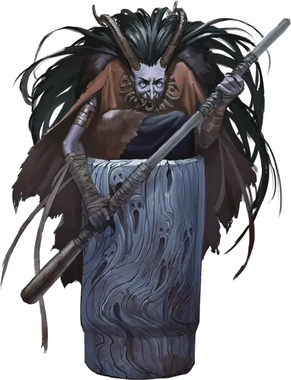

Ступа и пест Бабы-яги
Baba Yaga’s Mortar and Pestle
Чудесный предмет, артефакт (требуется настройка)

Творения бессмертной карги Бабы-яги бросают вызов законам смертной магии. Среди печально известных вещей, которые являются основами легенд о ней в бесчисленных мирах, находятся два артефакта, с помощью которых она путешествует между планами: ступа и пест Бабы-яги. Эти именные инструменты Бабы-яги представляют собой единый артефакт в вопросах настройки на них. Если их разделить, то пест появится рядом со ступой на рассвете следующего дня.
Случайные свойства. Этот артефакт обладает следующими случайными свойствами, которые вы можете определить броском по таблицам в разделе «Артефакты» «Руководства Мастера»:
- 2 малых положительных свойства
- 1 основное положительное свойство
- 1 малое отрицательное свойство
Свойства ступы. Ступа — это Крошечная деревянная чаша. Она может увеличиваться в размерах, чтобы вместить всё, что вы помещаете внутрь, расширяясь, если есть достаточно места, до Большого размера, и этом случае способна вместить Большое существо.
Свойства песта. Пест — это изношенный деревянный инструмент длиной 6 дюймов. Один раз во время вашего хода, когда вы держите пест, вы можете увеличить его, сделав боевым посохом, или уменьшить обратно до маленького песта (никаких действий не требуется). В форме боевого посоха пест — это магическое оружие, предоставляющее бонус +3 к броскам атаки и урона, совершаемым им.
Пест имеет 12 зарядов. Когда вы попадаете рукопашной атакой этим пестом, вы можете израсходовать до 3-х его зарядов, чтобы причинить цели дополнительный урон силовым полем 1к8 за каждый израсходованный заряд. Пест ежедневно восстанавливает все заряды на рассвете.
Идеальные инструменты. Держа ступу и пест, вы можете действием произнести название любого немагического растения, минерала или жидкости и количество материала общей стоимостью до 10 зм. Ступа мгновенно заполняется указанным количеством этого материала. Когда вы используете действие подобным образом, вы не сможете сделать это вновь, пока не закончите продолжительный отдых.
Вы также можете использовать артефакт в качестве набора травника или инструментов алхимика, пивовара, повара или отравителя. Вы совершаете с преимуществом все проверки, использующие артефакт в качестве одного из этих инструментов.
Первобытные части. Действием, если пест и ступа находятся в пределах 5 футов от вас, вы можете приказать песту молоть. В течение следующей минуты или до тех пор, пока вы действием устно не прикажете ему остановиться, пест движется сам по себе, размалывая содержимое ступы в кашицу или мелкий порошок, который одинаково полезен для приготовления пищи и алхимии. В начале каждого вашего хода всё, что находится в ступе, получает 4к10 урона силовым полем. Если это уменьшает хиты цели до 0, цель растирается в порошок, кашицу или пасту — что больше подходит. Нетронутыми остаются только магические предметы. Когда пест остановится, вы можете заставить ступку разделить содержимое на отдельные кучки, например: измельчённые кости, измельчённые травы, измельчённые органы.
Ночной траверс. Если вы держите пест, находясь внутри ступы, вы можете действием устно приказать ступе переместиться в определённое место или к существу. Вам не нужно знать, где находится пункт назначения, но это должно быть конкретное место — не просто ближайшая река или логово красного дракона. Если указанный пункт назначения находится в пределах 1000 миль, ступа поднимается в воздух и исчезает. Вы и любые существа в ступе путешествуете по сказочному небу, с туманными отражениями мира, проплывающими под вами. Существа могут видеть ваши образы, проносящиеся по небу между точкой отправления и пунктом назначения. Вы прибываете на место через 1 час, а ночью — через 1 минуту.
Кости знают свой дом. Когда вы приказываете ступе двигаться, вы можете вместо этого выбросить пыль или пасту из чего-то, что было размолото ступой, и произнести название места на другом плане существования или в другом мире на Материальном Плане. Если выброшенный материал получен из существа, родившегося на названном плане или в названном мире, то ступа перемещается по пустому ночному небу в свободное пространство в названном месте, прибывая туда через 1 минуту.
Уничтожение ступы и песта. Ступу и пест уничтожаются, если их растопчет танцующая избушка Бабы-яги или сама Баба-яга.